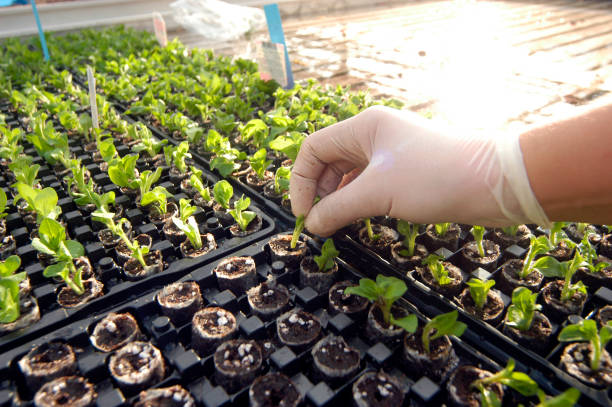

CROP PROPAGATION AND CULTURAL PRACTICE

Crop Propagation
What is Crop Propagation?
Crop propagation can be define the process of growing new plants.
Methods of Crop Propagation
- Seed Propagation :Plant seeds to grow new plants. Common for vegetables and grains.
- Vegetative Propagation :Use parts of a plant, like cuttings or tubers, to grow new plants.
Examples include potatoes,yam, and strawberries.
- Grafting and Budding :Join parts of two plants to grow as one. Often used for fruit trees.
- Layering :Grow roots on a branch while still attached, then cut and plant it. Used for plants like roses.
- Tissue Culture :Grow new plants from small pieces of a plant in a clean environment.
Used to make many plants quickly.
Advantages of Crop Propagation by Seeds
-
Seed propagation allows for natural variation, which can enhance disease resistance and adaptability.
-
Seeds are generally less expensive compared to other methods like cloning or grafting.
-
Seeds are compact, easy to store, and can be transported over long distances without damage.
-
Seeds are readily available for a wide range of crops and can be sourced easily from different suppliers.
-
Seeds can be sown in small spaces, allowing for easier management in small-scale or large-scale agriculture.
-
Seed propagation supports the natural growth process of plants, promoting healthy root development and strong plant structure.
disadvantages of Crop Propagation by Seeds
-
Seeds may produce plants with different traits, leading to inconsistency in crop yield and quality.
-
Seeds take time to germinate and grow, delaying the time to harvest.
-
Not all seeds may germinate successfully, leading to reduced plant population.
-
Seeds can carry diseases that may affect the plants once they start growing.
-
Seedlings are more sensitive to environmental conditions, such as temperature and moisture, which can affect their survival.
-
Seed propagation often requires more time and effort, especially for sowing, watering, and care during early growth stages.
Advantages of Crop Propagation by vegetables Methods
- it allows for faster establishment of plants since they are started from parts that are already developed.
- it ensures genetic consistency as the new plants are clones of the parent, maintaining desired characteristics.
- methods like cuttings or grafting have higher rates of successful growth compared to seeds.
- ensure retention of desirable traits, such as disease resistance or fruit quality, by maintaining the genetic makeup of the parent plant.
- early harvesting is possible, as the plants begin with an already-established root system or structure.
- for crops that are difficult to grow from seeds, vegetable propagation methods provide a reliable alternative, ensuring the continuity of production.
- No Pollination Needed, Can propagate plants that don't produce seeds well or need specific pollinators.
Application of crop propagation
- Agriculture: Growing crops with good traits.
- Horticulture : Growing decorative plants and flowers.
- Forestry : Producing trees for wood and replanting.
- Landscaping : Producing a variety of plants for designing and maintaining gardens and parks.
- Research : Developing new plant varieties and studying plant genetics and diseases.
CULTURAL PRACTICE IN CROP PRODUCTION
Cultural practices are the techniques and methods used
to manage crops and maintain soil health to maximize yield and quality.
Techniques of Cultural practices
-
Soil Preparation :Preparing the soil by plowing, tilling, and leveling to create a good seedbed. Adding amendments like compost or fertilizers to improve soil fertility.
-
Irrigation : Providing water to crops through methods like drip irrigation, sprinklers, or flood irrigation. Ensuring crops receive adequate water for growth.
-
Weed Management : Controlling weeds through mechanical methods (like hoeing and tilling) or chemical methods (using herbicides). Mulching can also help suppress weed growth.
-
Fertilization :Adding nutrients to the soil to promote plant growth. This can include organic fertilizers (compost, manure) or inorganic fertilizers (chemical fertilizers).
-
Pest and Disease Control : Protecting crops from pests and diseases using integrated pest management (IPM), which includes biological control, chemical treatments, and cultural practices like crop rotation.
-
Pruning and Training : Removing dead or diseased plant parts and shaping plants to promote healthy growth. Training plants, especially vines and fruit trees, to grow in a desired direction.
-
Crop Rotation : Growing different types of crops in the same area in sequential seasons. This helps prevent soil depletion and reduces pest and disease problems.
-
Mulching : Applying a layer of material (like straw, leaves, or plastic) on the soil surface to retain moisture, control weeds, and regulate soil temperature.
-
Harvesting :Collecting crops at the right stage of maturity to ensure the best quality and yield. Using proper techniques to avoid damaging the produce.
-
Post-Harvest Handling : Managing harvested crops to maintain their quality. This includes cleaning, sorting, storing, and transporting the produce under suitable conditions.